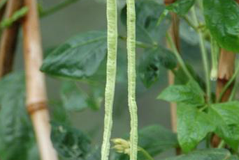

Specie: Vigna unguiculata
Taxonomy: Fabaceae; Papilionoideae; 50 kb inversion clade; NPAAA clade; indigoferoid/millettioid clade; Phaseoleae; Vigna
Abbr: Vun
Level: Chromosome
chromosome number: 2n=2X=22

Introduction: Annual twining, herbaceous vine or suberect herb, sometimes apically twining. Stems subglabrous. Leaves pinnately compound with 3 leaflets; stipules lanceolate, ca. 1 cm, decurrent into a short spur where inserted, linear; leaflets ovate-rhombic, 5-15 cm long, 4-6 cm wide, apex acute, margin entire or subentire, sometimes lavender, glabrous. Racemes axillary, long pedicellate; flowers 2-6 clustered at the tip of the inflorescence, often with fleshy dense glands between pedicels; calyx light green, campanulate, 6-10 mm long, lobed teeth lanceolate; corolla yellowish white and slightly cyanotic, ca. 2 cm long, each petal petiolate, flagellum compressed, ca. 2 cm wide, apically retuse, slightly auriculate at the base, pterygoid petals slightly triangular, keeled petals slightly curved; ovary linear, hairy. Pods pendulous, erect or obliquely spreading, linear, 7.5-70(90) cm long, 6-10 mm wide, slightly fleshy and swollen or firm, with many seeds; seeds long ellipsoid or cylindrical or slightly reniform, 6-12 mm long, yellowish white, dark red or other colors. May-August.
Distribution: Angola, Benin, Botswana, Burundi, Cameroon, Cape Provinces, Cape Verde, Caprivi Strip, Central African Repu, Chad, Congo, Eritrea, Ethiopia, Free State, Gabon, Gambia, Ghana, Guinea, Guinea-Bissau, Gulf of Guinea Is., Ivory Coast, Kenya, KwaZulu-Natal, Liberia, Malawi, Mali, Mauritania, Mozambique, Namibia, Nigeria, Northern Provinces, Rwanda, Senegal, Sierra Leone, Sudan, Swaziland, Tanzania, Togo, Uganda, Zambia, Zaïre, Zimbabwe
Article Title: Genome and pan-genome assembly of asparagus bean (Vigna unguiculata ssp. sesquipedialis) reveal the genetic basis of cold adaptation
Data source: The data presented in the study are deposited in the National Center for Biotechnology Information (NCBI) BioProject database, accession number PRJNA869326.